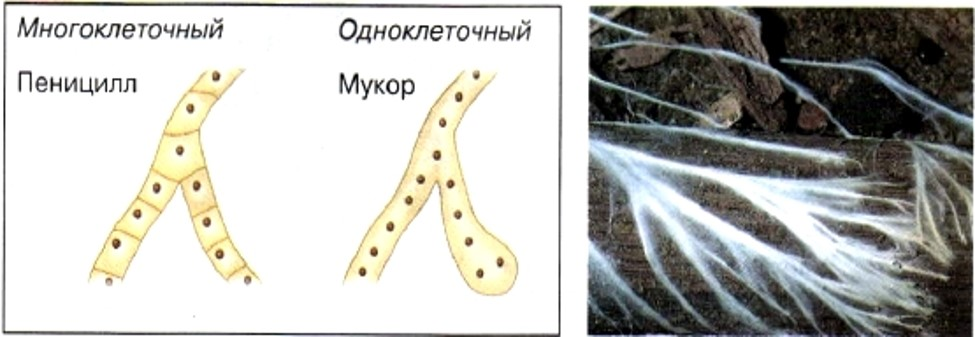
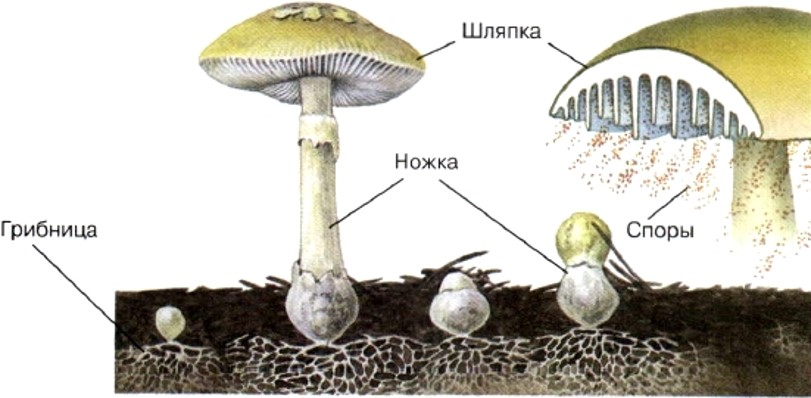
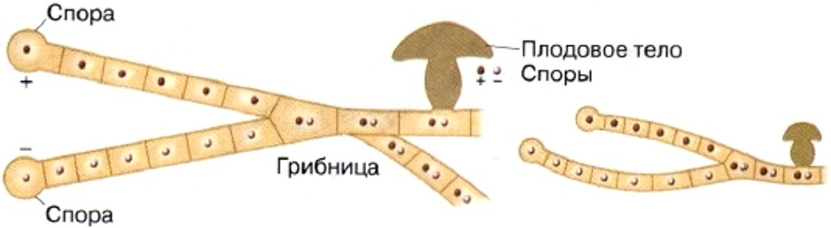
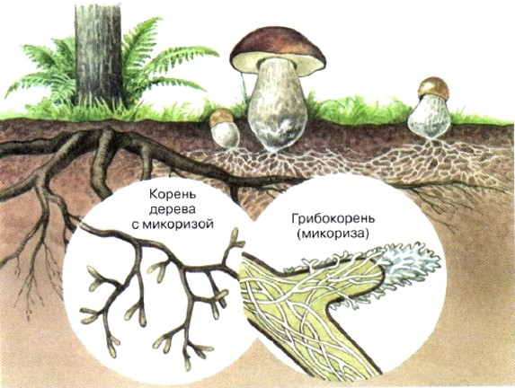
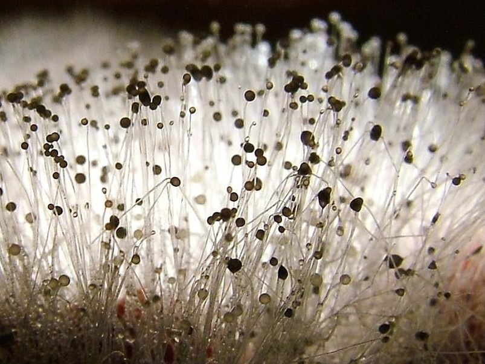
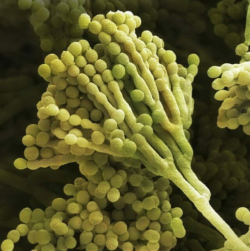
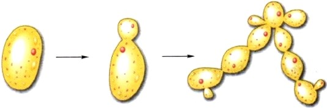

1. Общая характеристика грибов
Питание грибов. Для питания грибам необходимо готовое органическое вещество, что сближает их с животными. Но по способу поглощения пищи — путём всасывания, а не заглатывания — они сходны с растениями. По характеру питания грибы относят к сапротрофам или к паразитам. Грибы-сапротрофы питаются мёртвыми органическими веществами, а грибы-паразиты поселяются на живых организмах и питаются за их счёт. Строение грибов. Некоторые грибы — одноклеточные организмы, но большая их часть — многоклеточные. Оболочки клеток большинства грибов содержат хитин — органическое вещество, характерное для животных (например, насекомых). Тело гриба состоит из тонких белых нитей, образующих грибницу, или мицелий. У некоторых грибов нити грибницы представляют собой как бы одну гигантскую клетку с множеством ядер. У других нити грибницы многоклеточные, причём клетки могут содержать одно или несколько ядер.
Размножение грибов. Размножаются грибы бесполым или половым путём. Бесполое размножение происходит при помощи специализированных клеток — спор или вегетативно. Вегетативное размножение осуществляется частями грибницы или почкованием (у одноклеточных дрожжевых грибов). У некоторых грибов существует половое размножение. В этом случае грибница образуется в результате слияния специализированных половых клеток. Роль грибов в природе и жизни человека. Разрушая остатки растений и животных, грибы участвуют в круговороте веществ в природе и в образовании плодородного слоя почвы. Из некоторых грибов получают ценные лекарства. Съедобные грибы употребляют в пищу. Грибы необходимы при изготовлении хлеба, сыров, в виноделии и т. д. Но грибы могут наносить и большой вред. Некоторые из них вызывают болезни у растений, животных и человека. Грибы портят продукты питания, разрушают постройки. Некоторые грибы вырабатывают ядовитые вещества, ими можно тяжело и даже смертельно отравиться.
2. Шляпочные грибы
Строение шляпочного гриба. В повседневной жизни мы называем грибами их плодовые тела. У большинства съедобных грибов (за исключением трюфелей, строчков и сморчков) плодовое тело образовано ножкой и шляпкой. Отсюда и их название. Если в том месте, где снят гриб (то есть его плодовое тело), слегка разрыть почву, можно обнаружить тонкие ветвящиеся белые нити — грибницу (рис.17). Клетки грибницы шляпочных грибов чаще двухъядерные и не содержат пластид. Грибница — главная часть каждого гриба. На ней развиваются плодовые тела. Шляпка и ножка состоят из плотно прилегающих друг к другу нитей грибницы. В ножке все нити одинаковы, а в шляпке они образуют два слоя — верхний, покрытый кожицей, окрашенной разными пигментами, и нижний. У одних грибов, например у белого гриба, подберёзовика, маслёнка, нижний слой состоит из многочисленных трубочек.
Образование спор. В трубочках или на пластинках шляпки образуются особые клетки — споры, с помощью которых грибы размножаются (рис. 18). Созревшие мелкие и лёгкие споры высыпаются, их подхватывает и разносит ветер. Разносят их насекомые и слизни, а также белки и зайцы, поедающие грибы. Споры не перевариваются в пищеварительных органах этих животных и выбрасываются наружу вместе с помётом. Во влажной, богатой перегноем почве споры грибов прорастают, из них развиваются нити грибницы. Грибница, возникающая из одной споры, может образовывать новые плодовые тела лишь в редких случаях. У большинства видов грибов плодовые тела развиваются на грибницах, образованных слившимися клетками нитей, берущих начало от разных спор. Поэтому клетки такой грибницы двухъядерные. Грибница растёт медленно, лишь накопив запасы питательных веществ, она образует плодовые тела.
Симбиоз грибов и растений. Грибники знают, что подберёзовики чаще всего можно встретить в березняке, белые грибы — вблизи берёз, сосен, елей и дубов, рыжики — в сосновых и еловых лесах, подосиновики — в осинниках. Это объясняется тем, что между определёнными видами деревьев и грибов устанавливается тесная связь, полезная как одному, так и другому организму, то есть симбиоз.
3. Плесневые грибы и дрожжи
Гриб мукор. Если хлеб пролежит несколько дней в тёплом влажном месте, на нём появляется белый пушистый налёт, который через некоторое время темнеет. Это плесневый гриб-сапрофит мукор. Этот гриб часто поселяется также на фруктах, овощах, на конском навозе. Грибница мукора состоит всего из одной сильно разросшейся и разветвлённой клетки с множеством ядер в цитоплазме
Гриб пеницилл. На пищевых продуктах и на почве поселяются и другие плесневые грибы. Один из них — пеницилл. Грибница пеницилла, в отличие от грибницы мукора, состоит из ветвящихся нитей, разделённых перегородками на клетки. Споры пеницилла расположены не в головках, как у мукора, а на концах некоторых нитей грибницы в мелких кисточках. В клетках пеницилла образуется вещество, убивающее некоторые болезнетворные бактерии. Его специально разводят, чтобы получать лекарства для лечения многих болезней.
Дрожжи. С давних пор человек использует дрожжи для приготовления хлеба, пива, вина. Эти микроскопические грибы состоят из одной клетки, имеющей форму шарика. Они живут в питательной жидкости, богатой сахаром. Размножаются дрожжи почкованием. Сначала на взрослой клетке появляется небольшая выпуклость. Она увеличивается и превращается в самостоятельную клетку, которая вскоре отделяется от материнской. Почкующиеся клетки дрожжей похожи на ветвящиеся цепочки.